THÔNG TIN KHÁI QUÁT
| Diện tích | 5.033 km² |
| Dân số | 1,283 triệu (2019) |
| Mã bưu điện Thừa Thiên Huế | 49000 |
| Lịch sữ hình thành | Huế là thành phố của tỉnh Thừa Thiên Huế, Việt Nam. Huế từng là kinh đô (cố đô Huế) của Việt Nam thời phong kiến dưới triều Tây Sơn (1788–1801) và nhà Nguyễn (1802–1945). Hiện nay, thành phố là một trong những trung tâm về văn hóa – du lịch, y tế chuyên sâu, giáo dục đào tạo, khoa học công nghệ của Miền Trung - Tây Nguyên và cả nước. |
| Nét đặc trưng | Những địa danh nổi bật là sông Hương và những di sản để lại của triều đại phong kiến, Thành phố có năm danh hiệu UNESCO ở Việt Nam: Quần thể di tích Cố đô Huế (1993), Nhã nhạc cung đình Huế (2003), Mộc bản triều Nguyễn (2009), Châu bản triều Nguyễn (2014) và Hệ thống thơ văn trên kiến trúc cung đình Huế (2016). Ngoài ra, Huế còn là một trong những địa phương có di sản hát bài chòi đã được công nhận là di sản văn hóa phi vật thể của nhân loại. |
NHỮNG ĐỊA DANH NỖI TIẾNG
-
Kinh thành Huế
 Đại Nội Huế là một phần trong quần thể di tích Cố đô Huế, mang đậm dấu ấn văn hóa, lịch sử, kiến trúc của triều đại nhà Nguyễn. Là một công trình có quy mô đồ sộ nhất trong lịch sử Việt Nam, Di tích Đại Nội Huế có quá trình xây dựng kéo dài tới 30 năm với hàng vạn người thi công cùng hàng loạt các công việc như lấp sông, đào hào, đắp thành, dời mộ… cùng khối lượng đất đá khổng lồ lên đến hàng triệu mét khối.
Đại Nội Huế là một phần trong quần thể di tích Cố đô Huế, mang đậm dấu ấn văn hóa, lịch sử, kiến trúc của triều đại nhà Nguyễn. Là một công trình có quy mô đồ sộ nhất trong lịch sử Việt Nam, Di tích Đại Nội Huế có quá trình xây dựng kéo dài tới 30 năm với hàng vạn người thi công cùng hàng loạt các công việc như lấp sông, đào hào, đắp thành, dời mộ… cùng khối lượng đất đá khổng lồ lên đến hàng triệu mét khối. -
Cầu Trường Tiền
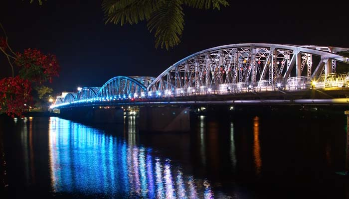Trường Tiền là cây cầu đầu tiên bắc qua sông Hương (người Pháp thường gọi là sông Huế), dưới thời vua Thành Thái, nối liền con đường thiên lý Bắc - Nam cách trở đò giang suốt mấy thế kỷ. Trải qua nhiều thăng trầm, cầu Tràng Tiền đã trở thành một phần lịch sử của mảnh đất cố đô. Mặc dù, ngày nay có nhiều cây cầu khác bắc qua sông Hương như Bạch Hổ, Phú Xuân, Bãi Dâu… nhưng Tràng Tiền vẫn là biểu tượng của xứ Huế mộng mơ soi bóng dưới dòng Hương Giang. -
Chùa Thiên Mụ
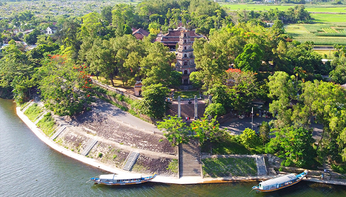Chùa chính thức khởi lập năm Tân Sửu (1601), đời chúa Nguyễn Hoàng – vị chúa Nguyễn đầu tiên ở Đàng trong và đây cũng là một trong những ngôi chùa cổ nhất đất cố đô. Một biểu tưởng gắn với hình ảnh chùa Thiên Mụ chính là tháp Phước Duyên.
-
Lăng Tự Đức
 Lăng Tự Đức (còn gọi là Khiêm Lăng) là một di tích lịch sử trong quần thể di tích cố đô Huế đã được UNESCO công nhận là di sản văn hóa thế giới ngày 11-12-1993. Đây là nơi chôn cất vị hoàng đế thứ 4 của triều đại nhà Nguyễn tức vua Tự Đức (Nguyễn Phúc Hồng Nhậm), ông trị vì được 36 năm từ 1847-1883, là vị vua ở ngôi lâu nhất của nhà Nguyễn.
Lăng Tự Đức (còn gọi là Khiêm Lăng) là một di tích lịch sử trong quần thể di tích cố đô Huế đã được UNESCO công nhận là di sản văn hóa thế giới ngày 11-12-1993. Đây là nơi chôn cất vị hoàng đế thứ 4 của triều đại nhà Nguyễn tức vua Tự Đức (Nguyễn Phúc Hồng Nhậm), ông trị vì được 36 năm từ 1847-1883, là vị vua ở ngôi lâu nhất của nhà Nguyễn. -
Chợ Đông Ba
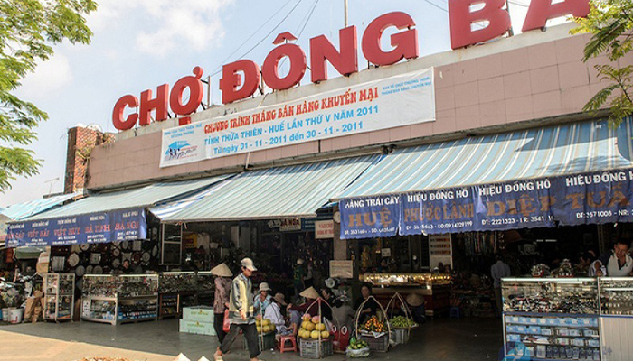Chợ Đông Ba là ngôi chợ lớn nhất tại Huế. Chợ là một trong những biểu tượng của vùng đất cố đô, với lịch sử hơn 100 năm xây dựng và phát triển. Khu chợ này lúc đầu có tên là Quy Giả Thị để đánh dấu sự trở lại của vua nhà Nguyễn khi quay về Phú Xuân. Cái tên Chợ Đông Ba Huế bắt đầu xuất hiện từ năm 1887 dưới thời vua Đồng Khánh. -
Bãi Biển Lăng Cô
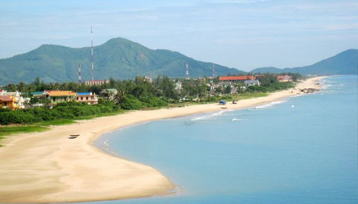Bãi biển Lăng Cô nằm trong Vịnh Lăng Cô Huế thuộc địa phận thị trấn Lăng Cô, huyện Phú Lộc, tỉnh Thừa – Thiên Huế. Nơi đây nằm ngay dưới chân đèo Hải Vân nên sở hữu vẻ đẹp hữu tình. Nhờ có cảnh quan đẹp, vua Khải Định đã cho xây dựng Hành Cung Tịnh Viêm để vua đến nghỉ mát vào mùa hè. Người Pháp cũng để lại nhiều dấ tích tại đây. Theo đó, cái tên Lăng Cô có thể bắt nguồn từ Làng Cò hoặc L’An.
-
Thiền Viện Trúc Lâm
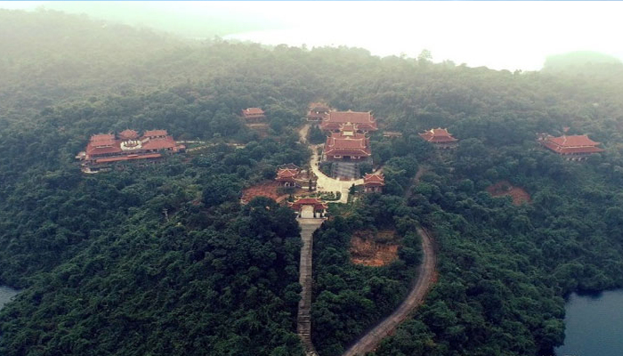Tọa lạc tại núi Bạch Mã, khu vực hồ Truồi, xã Lộc Hòa, huyện Phú Lộc, tỉnh Thừa Thiên Huế. hiền viện Trúc Lâm Bạch Mã – Không chỉ là một địa điểm du lịch ở Huế mà du khách còn được thưởng ngoạn nét cổ kính của ngôi chùa, những hoa văn họa tiết tôn lên vẻ cổ kính, thanh tịnh, trang nhã. -
Phố Tây Huế
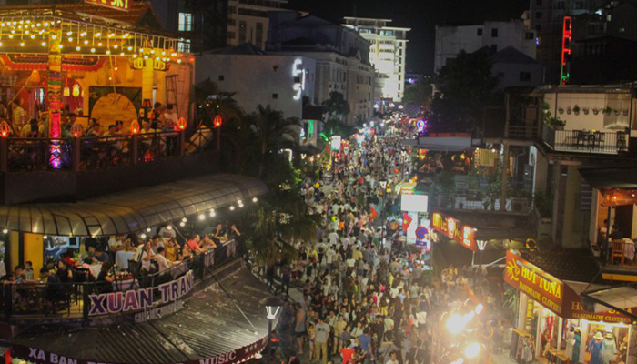Phố Tây Huế là điểm đến hấp dẫn trong chuyến hành trình khám phá du lịch Huế. Nơi đây là thiên đường ẩm thực, vui chơi, giải trí, mua sắm cực kỳ nổi tiếng. Khu phố Tây Huế còn là điểm nhấn sôi động giữa bức tranh cố đô tĩnh lặng. Hai bên đầu phố Tây Huế là bờ sông Hương và cầu Tràng Tiền. -
Suối Nước Nóng Thanh Tân
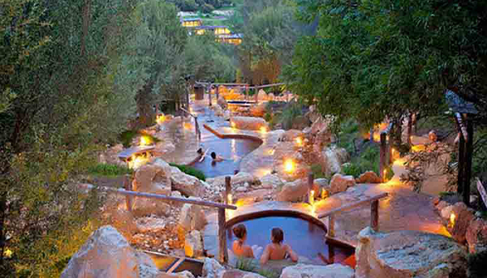Suối nước nóng Thanh Tân là một địa điểm du lịch nghĩ dưỡng nổi tiếng mà bạn không nên bỏ qua khi có dịp đi du lịch Huế. Ở suối Thanh Tân bạn có thể nghỉ ngơi, thư giản với các dịch vụ massage nhẹ nhàng hoặc các phương pháp trị liệu spa khác. Ngoài ra còn các hoạt động giải trí ngoài trời như đu dây mạo hiểm, vô số các trò chơi thú vị ở công viên nước.
NHỮNG LỄ HỘI TIÊU BIỂU
NHỮNG MÓN ĂN ĐẶC SẢN
-
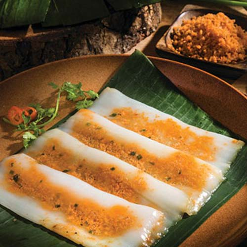BÁNH NẬM
-
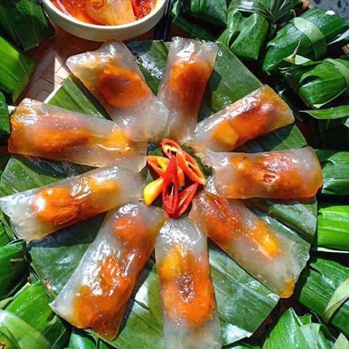BÁNH LỌC
-
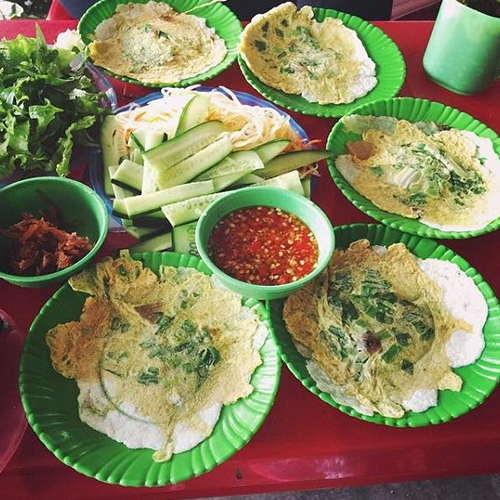BÁNH ÉP
-
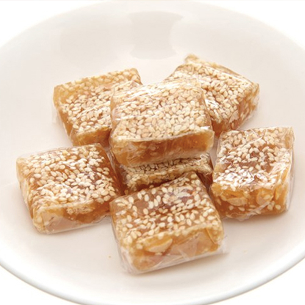KẸO MÈ XỬNG
-
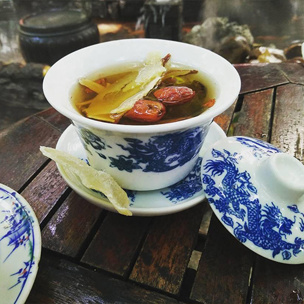TRÀ CUNG ĐÌNH
-
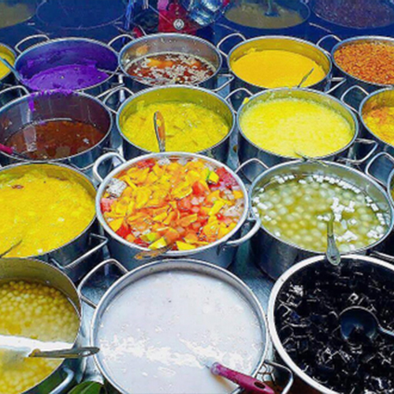CHÈ CUNG ĐÌNH
-
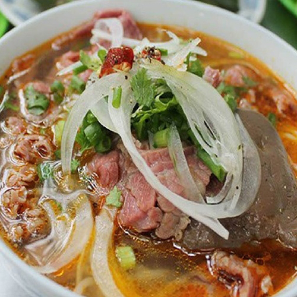BÚN BÒ
-
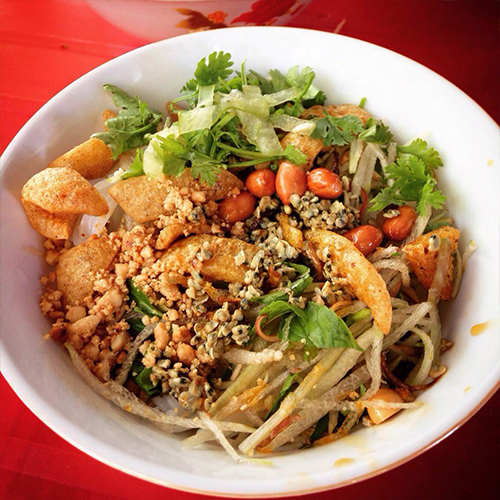BÚN HẾN
-
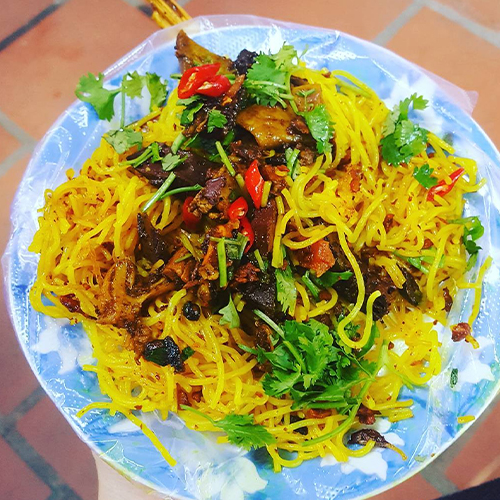BÚN NGHỆ
THỜI ĐIỂM DU LỊCH
Thành phố Huế nằm tại vị trí đắc địa có điều kiện thiên nhiên, hệ sinh thái phong phú và mang một diện mạo rất riêng biệt. Bên cạnh vị trí địa lý, đặc điểm thời tiết, khí hậu Huế cũng rất đặc trưng. Thành phố Huế có mùa khô nóng và mùa mưa ẩm lạnh với mức nhiệt độ trung bình hàng năm vùng đồng bằng khoảng 24 độ C đến 15 độ C. Nhìn chung, khí hậu Huế không phải là đặc điểm lý tưởng để đi du lịch. Tuy nhiên, con người nơi đây biến điều này thành sự khác biệt, kết hợp danh lam thắng cảnh, lễ hội để tạo sự đặc trưng của vùng đất này.
-
Mùa xuân
từ tháng 1 đến tháng 2
-
Mùa hạ
từ tháng 3 đến tháng 8
-
Mùa thu
từ tháng 9 đến tháng 10
-
Mùa đông
từ tháng 11 đến tháng 12
- 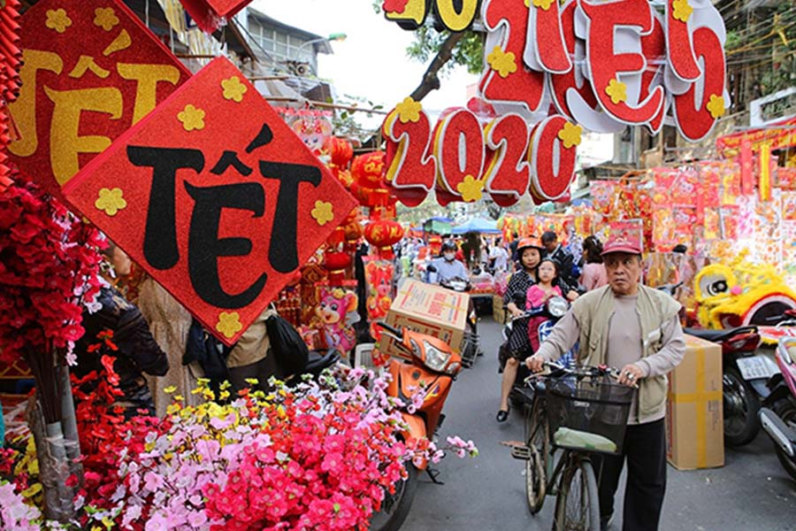
-
Mùa xuân ở Huế kéo dài từ tháng 1 đến cuối tháng 2, đó là thời khắc chuyển tiếp giữa mùa, khi cái lạnh tan dần, tan dần, nhường chỗ cho nắng ấm của ngày mới, mùa mới và khắp nơi nơi trên cái mảnh đất bình yên ấy, người ta nhận thấy một lớp áo mới được khoác lên, căng tràn sức sống nhưng vẫn phảng phất nét e lệ, ưu tư. Mùa này đến Huế bạn sẽ bắt gặp hình ảnh một thành phố xanh tươi mơn mởn, phảng phất dự vị của năm mới, Huế lại càng trở nên đẹp và mới lạ hơn.
- 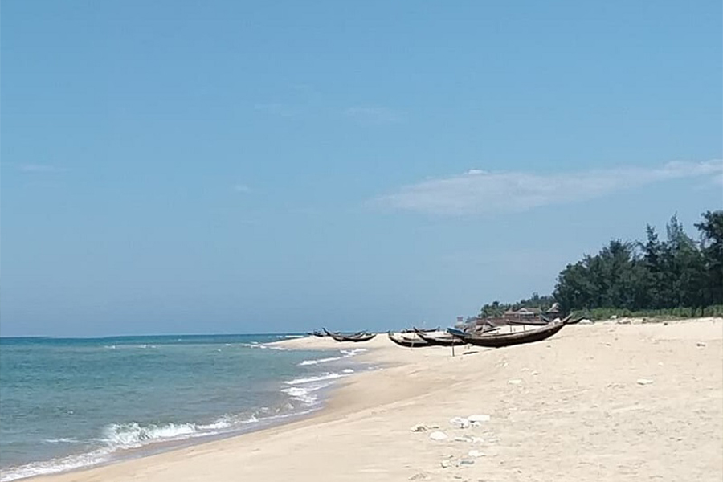
-
Thời điểm của mùa lễ hội Huế. Đến Huế đẹp nhất thì nên chọn dịp Festival Huế (lễ hội văn hóa nghệ thuật du lịch có quy mô quốc gia và mang tính quốc tế đầu tiên ở Việt Nam). Đến Huế vào dịp này du khách vừa thấy được vẻ mộng mơ của xứ Huế, vừa khám phá được những nét văn hóa đặc thù mà qua sách báo và tranh ảnh không thể cảm nhận được tất cả. Festival là thời điểm Huế trở nên náo nhiệt với nhiều hoạt động nghệ thuật và giải trí đặc sắc của các đoàn nghệ thuật trong nước và nước ngoài. Là thời khắc Huế quyến rũ bởi những màu sắc rực rỡ, thành phố được trang hoàng lộng lẫy như những cung điện hoàng gia. Đối với du khách chưa đến Huế lần nào hay muốn tìm hiểu văn hóa và đặc trưng ở Huế thì Festival Huế là thời điểm thích hợp nhất. Ngoài ra, thời gian này cũng là thời gian tuyệt vời nhất để tham gia du lịch biển.
- 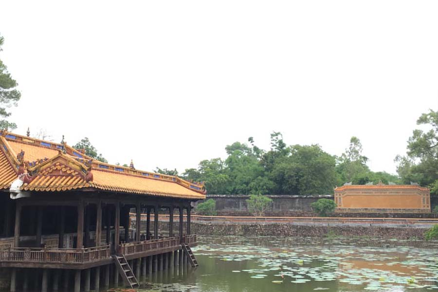
-
Nhiều người nói Huế không có tiết thu, phải để ý kỹ mới thấy được hình bóng mùa thu về trên xứ Huế. Những tán cây ngả vàng, lá rụng nhiều trên hè phố là những dấu hiệu thiên nhiên dễ thấy nhất khi thu sang.Mùa thu Huế không đặc trưng như mùa thu Hà Nội có cây bàng lá đỏ, hoa sữa thơm hương. Thu để lại trên mảnh đất thương nhớ những trận mưa dầm tưới ướt cây cỏ, phải đến ngày nắng ít ỏi mới thấy được lá vàng khẽ rơi trong gió. Tiết trời của những ngày thu cũng là thời điểm giao nhau của những tháng ngày oi bức của mùa hạ và mùa đông nơi đây. Thời tiết được xem là tuyệt vời để chiêm ngưỡng những nét đẹp đặc trưng của Huế, thưởng thức ẩm thực đặc trưng nơi đây.
- 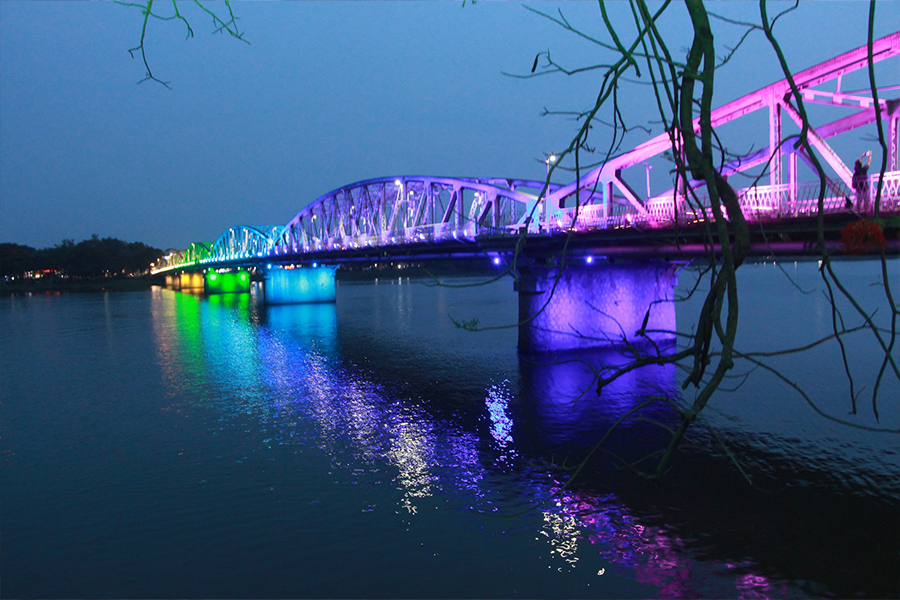
-
Đối với những du khách yêu thích cái lạnh và những cơn mưa xứ Huế thì tháng 11 – 12 là thời điểm phù hợp để tận hưởng “mùa đông cố đô”. Đến Huế vào mùa này, du khách sẽ được trải nghiệm khoảnh khắc tham quan Huế trong mưa. Mê say những món đồ nướng vỉa hè như khoai lang nước, bắp quét mỡ hành nướng bếp than, mực khô nướng,…ngồi trong cơn mưa lạnh giá của Huế tận hưởng thì có gì bằng. Mưa Huế đã trở thành nét đặc sắc của vùng đất cố đô, mưa Huế mang hơi thở da diết làm con người ta nhớ đến những kỉ niệm hoài cổ, giúp người ta yêu thương cũng như quý trọng những kỉ niệm xa xưa hơn.